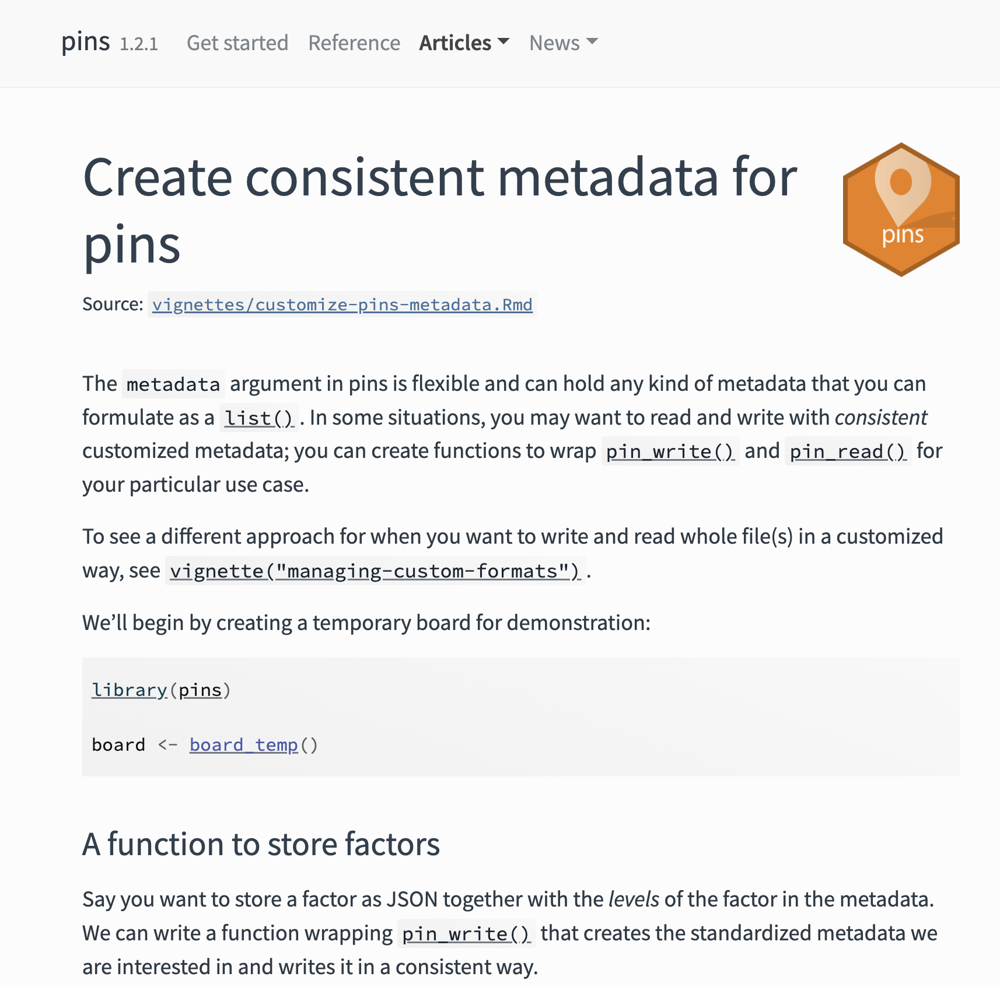
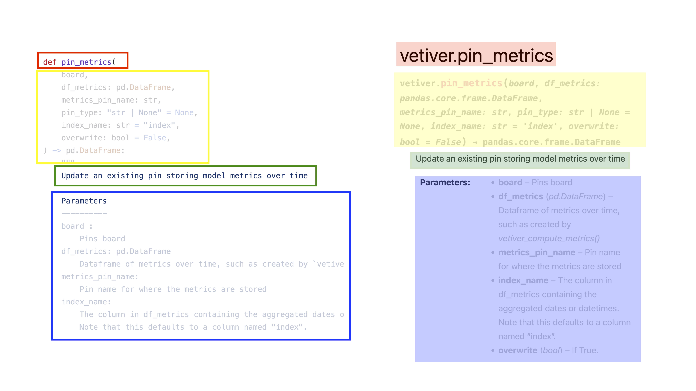
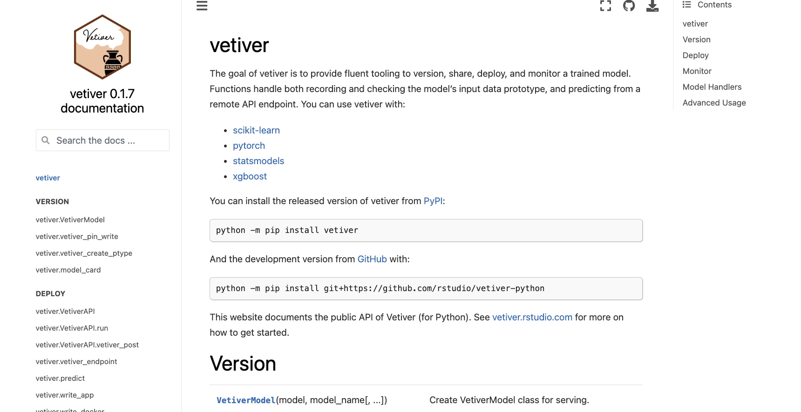
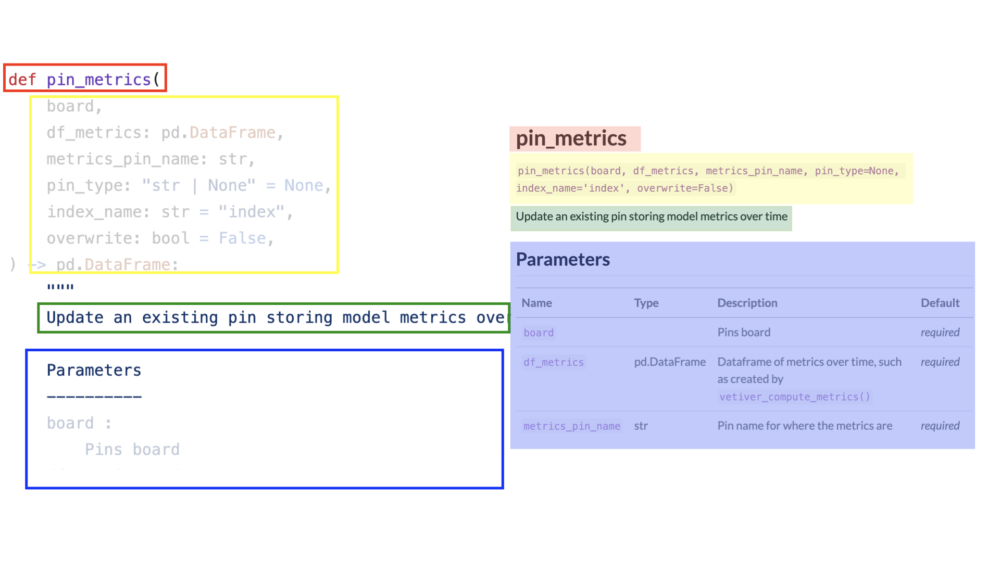
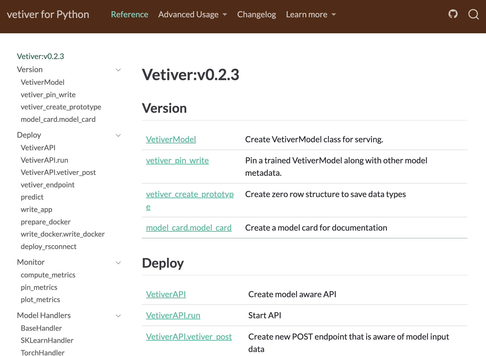
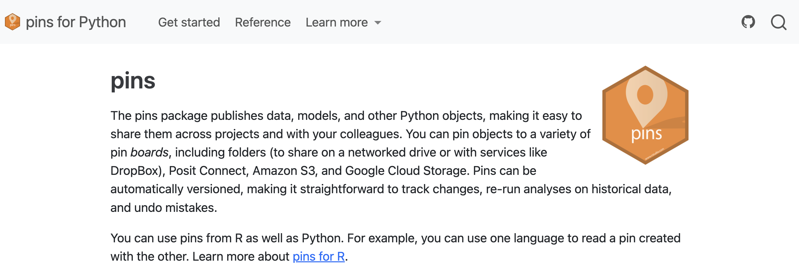

thanks, i made it in quartodoc
isabel zimmerman, posit pbc
long format docs
…when and why to run the code
mkdocs

function reference
…how to run code
function reference

function reference
function reference

quartodoc 🤎


developer wins
quick to get started
(little bit of configuration)
little bit of configuration
little bit of configuration
little bit of configuration
little bit of configuration
little bit of configuration
little bit of configuration
little bit of configuration
website built with quarto
- generates
.qmdfiles as reference pages - accessibility built in
- extensible as packages grow
extensibility

user wins
predictable
WASM elements